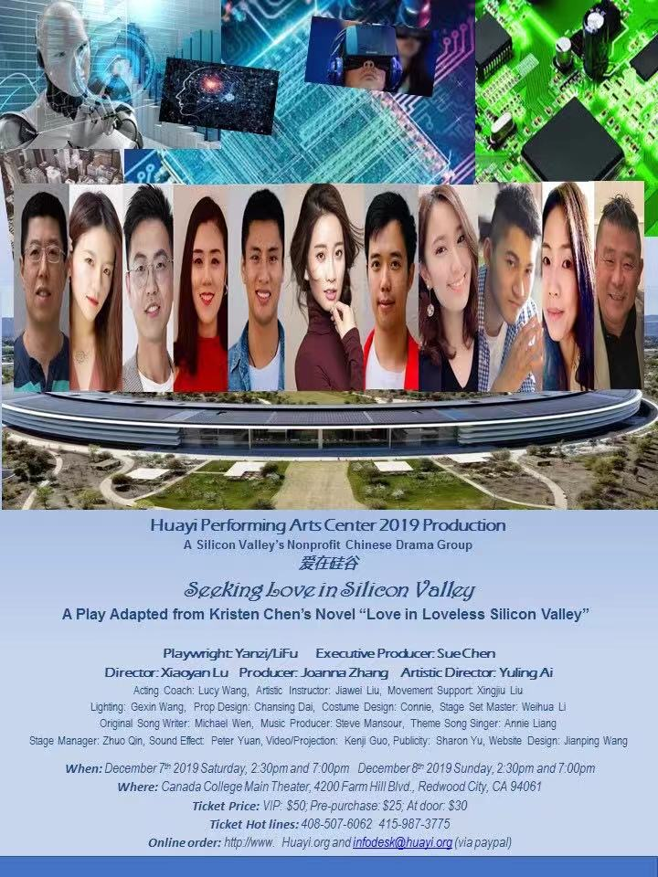

Steve Mansour
| HOME | MUSICIAN | SONG WRITER | PRODUCER |
|
I enjoy working with musicians and songwriters creating new ideas that will bring their songs and music to life. I am an enthusiastic songwriter, arranger, audio engineer, and multi-instrumentalist. If you just have a rough idea for a song I enjoy working through chords, melody, and lyrics to create a finished song. Or if you have a rough version that you play with a band I enjoy polishing a song with an arrangement that you have imagined or that we work out together. I also love to shape and mold sound for those situations where you've recorded something that is not exactly what you want to hear. I use Pro Tools 12 and I have a huge assortment of plugins along with some great microphones and mic preamps in my studio.
 While I
typically work in the pop, rock, and progressive genres, I do enjoy doing something completely different. I did
the music production for a stage play. Here are a couple of songs from that effort. Michael Wen wrote the songs,
I did the arrangements and played the instruments. The songs were sung by Anni Liang.
|